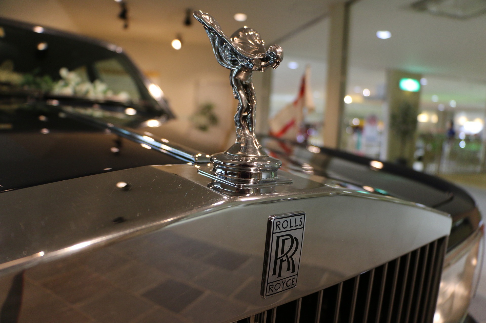
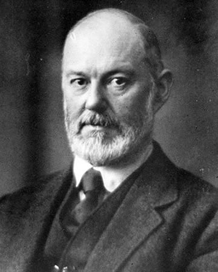
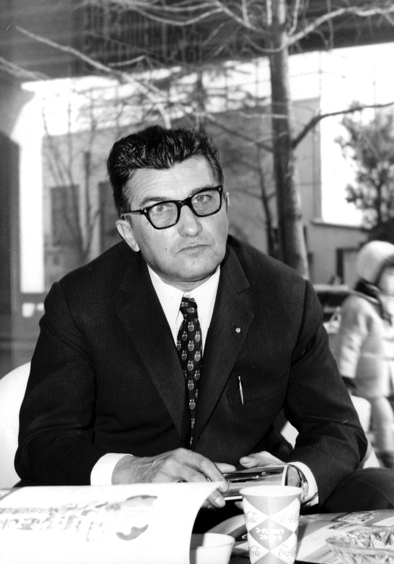

LAMBORGHINI
LAMBORGHINI
Official Website :
.jpg)
ROLLS-ROYCE |
||
ROLLS-ROYCE:Official Website : |
 |

Founder : Henry Royce |
Rolls-Royce Motor Cars Limited is a British luxury automobile maker which has operated as a wholly owned subsidiary of BMW AG since 2003 — as the exclusive manufacturer of Rolls-Royce-branded motor cars. The company's administrative and production headquarters are located on the Goodwood Estate in Goodwood, West Sussex, England, United Kingdom. From 1906 to 2003, motor cars were manufactured and marketed under the Rolls-Royce brand by Rolls-Royce Motors. The Rolls-Royce Motor Cars subsidiary of BMW AG has no direct relationship to Rolls-Royce-branded vehicles produced before 2003, other than having briefly supplied components and engines. The Bentley Motors Limited subsidiary of Volkswagen AG is the direct successor to Rolls-Royce Motors and various other predecessor entities that produced Rolls-Royce and Bentley branded cars between the foundation of each company and 2003, when the BMW-controlled entity started producing cars under the Rolls-Royce brand. The BBC called Rolls-Royce "probably one of the most recognised icons in the world", and that "the name Rolls-Royce entered the English language as a superlative."[3] A marketing survey in 1987 showed that only Coca-Cola was a more widely known brand than Rolls-Royce.[4] The company's line of vehicles includes the Phantom, a four-door saloon first offered in 2003 as well as its extended wheelbase two-door coupé and convertible variants; the smaller Ghost four-door saloon; Wraith two-door coupé; Dawn convertible; the Cullinan SUV, and the forthcoming 2023 Spectre, the first all-electric Rolls-Royce.[5]
In 1998, Vickers decided to sell Rolls-Royce Motors. The most likely buyer was BMW, which already supplied engines and other components for Rolls-Royce and Bentley cars, but BMW's final offer of £340 million was beaten by Volkswagen's £430 million ($703 million).[8] A stipulation in the ownership documents of Rolls-Royce dictated that Rolls-Royce Holdings plc, the aero-engine maker, would retain certain essential trademarks, including the Rolls-Royce brand name and logo if the automotive division was sold. Although Vickers plc sold the vehicle designs, nameplates, administrative headquarters, production facilities, Spirit of Ecstasy and Rolls-Royce grille shape trademarks to Volkswagen AG, Rolls-Royce plc chose to license the Rolls-Royce name and logo to BMW AG for £40 million ($66 million), because Rolls-Royce plc had recently had joint business ventures with BMW.[9] BMW's contract to supply engines and components to Rolls-Royce Motors allowed BMW to cancel the contract with 12 months' notice. Volkswagen would be unable to re-engineer the Rolls-Royce and Bentley vehicles to use other engines within that time frame. With the Rolls-Royce brand identification marks split between the two companies and Volkswagen's engine supply in jeopardy, the two companies entered into negotiations. Volkswagen agreed to sell BMW the Spirit of Ecstasy and grille shape trademarks and BMW agreed to continue supplying engines and components until 2003. Volkswagen continued to produce Rolls-Royce branded vehicles between 1998 and 2003. This gave BMW time to build a new Rolls-Royce administrative headquarters and production facility on the Goodwood Estate near Chichester, West Sussex, and develop the Phantom, the first Rolls-Royce from the new company. Rolls-Royce Motor Cars Limited became the exclusive manufacturer of Rolls-Royce branded cars in 2003. Rolls-Royce announced in September 2014 that a new technology and logistics centre would be built, which opened in 2016, 8 miles away from the main headquarters, in the seaside resort town of Bognor Regis
LAMBORGHINI |
||
LAMBORGHINIOfficial Website : |
|

Founder:Ferruccio
|
Automobili Lamborghini S.p.A. is an Italian brand and manufacturer of luxury automobiles. Lamborghini's production facility and headquarters are located in Sant'Agata Bolognese, Italy. Italian manufacturing magnate Ferruccio Lamborghini founded the company in 1963 with the objective of producing a refined grand touring car to compete with offerings from established marques such as Ferrari. The company's first models were introduced in the mid-1960s and were noted for their refinement, power and comfort. Lamborghini gained wide acclaim in 1966 for the Miura sports coupé, which established rear mid-engine, rear wheel drive as the standard layout for high-performance cars of the era. Lamborghini grew rapidly during its first decade, but sales plunged in the wake of the 1973 worldwide financial downturn and the oil crisis. Ferruccio Lamborghini sold ownership of the company to Georges-Henri Rossetti and René Leimer and retired in 1974. The company went bankrupt in 1978, and was placed in the receivership of brothers Jean-Claude and Patrick Mimran in 1980, who purchased the company for US$3 million, renaming it Nuova Automobili Lamborghini SpA. As CEO and President, Patrick Mimran invested heavily in the company's expansion, and was later credited as being the man who saved Lamborghini. Under his management, Lamborghini's model line was expanded from the Countach to include the Jalpa entry-level sports car and the LM002 high performance off-road vehicle. Patrick Mimran sold Lamborghini to the Chrysler Corporation in 1987 for US$25 million. After replacing the Countach with the Diablo and discontinuing the Jalpa and the LM002, Chrysler sold Lamborghini to Malaysian investment group Mycom Setdco and Indonesian group V'Power Corporation in 1994. In 1998, Mycom Setdco and V'Power sold Lamborghini to the Volkswagen Group where it was placed under the control of the group's Audi division. New products and model lines were introduced to the brand's portfolio and this increased productivity for the brand.